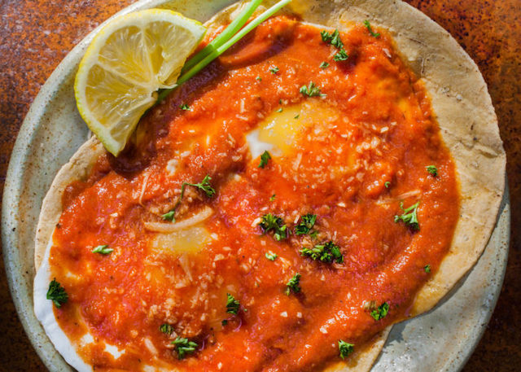

Huevos Rancheros
Description
This dish utilizes two of the dishes found on the
main page.
It is a Mexican dish that is traditionally eaten for breakfast. However, you can enjoy at any time of the day. Enjoy!